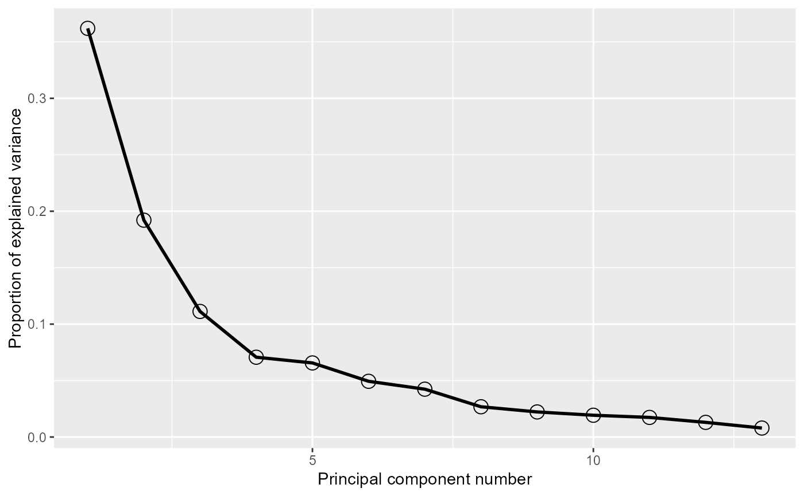
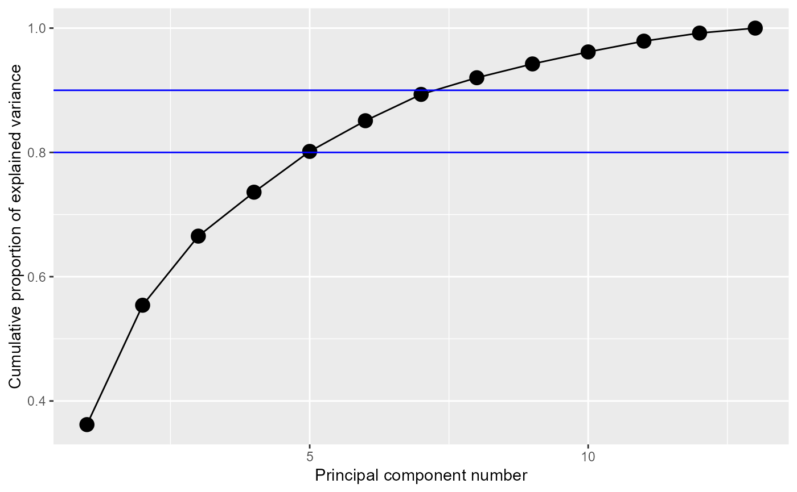
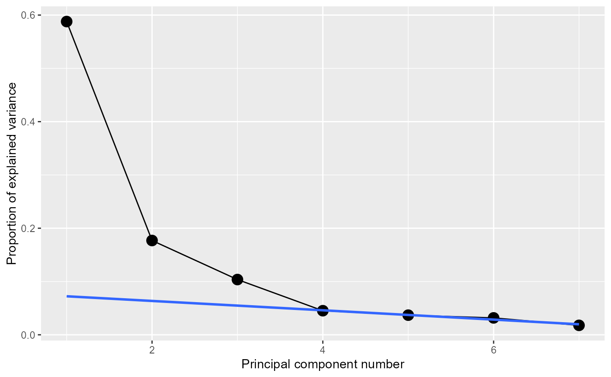

Produces scree plots (Cattell, 1966) of the variance proportions explained by each dimension against dimension number from various PCA-like dimension reduction techniques.
Usage
ggscreeplot(
pcobj,
type = c("pev", "cev"),
size = 4,
shape = 19,
color = "black",
linetype = 1,
linewidth = 1
)Arguments
- pcobj
an object returned by
prcomp,princomp,PCA,dudi.pca, orlda- type
the type of scree plot, one of
c('pev', 'cev').'pev'plots the proportion of explained variance, i.e. the eigenvalues divided by the trace.'cev'plots the cumulative proportion of explained variance, i.e. the partial sum of the first k eigenvalues divided by the trace.- size
point size
- shape
shape of the points. Default: 19, a filled circle.
- color
color for points and line. Default:
"black".- linetype
type of line
- linewidth
width of line
References
Cattell, R. B. (1966). The Scree Test For The Number Of Factors. Multivariate Behavioral Research, 1, 245–276.
Examples
data(wine)
wine.pca <- prcomp(wine, scale. = TRUE)
ggscreeplot(wine.pca)

# show horizontal lines for 80, 90% of cumulative variance
ggscreeplot(wine.pca, type = "cev") +
geom_hline(yintercept = c(0.8, 0.9), color = "blue")

# Make a fancy screeplot, higlighting the scree starting at component 4
data(crime)
crime.pca <-
crime |>
dplyr::select(where(is.numeric)) |>
prcomp(scale. = TRUE)
(crime.eig <- crime.pca |>
broom::tidy(matrix = "eigenvalues"))
#> # A tibble: 7 × 4
#> PC std.dev percent cumulative
#> <dbl> <dbl> <dbl> <dbl>
#> 1 1 2.03 0.588 0.588
#> 2 2 1.11 0.177 0.765
#> 3 3 0.852 0.104 0.868
#> 4 4 0.563 0.0452 0.914
#> 5 5 0.508 0.0368 0.951
#> 6 6 0.471 0.0317 0.982
#> 7 7 0.352 0.0177 1
ggscreeplot(crime.pca) +
stat_smooth(data = crime.eig |> dplyr::filter(PC>=4),
aes(x=PC, y=percent), method = "lm",
se = FALSE,
fullrange = TRUE)
#> `geom_smooth()` using formula = 'y ~ x'
